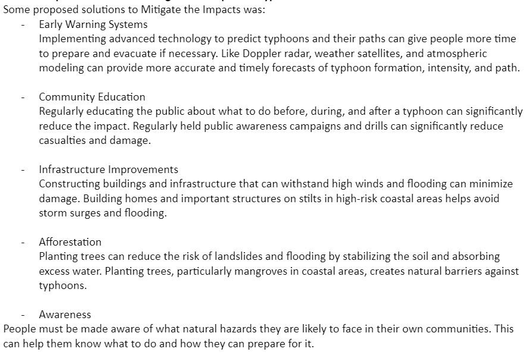

Typhoons are natural disasters that we can't avoid. The best thing we can do is to mitigate the impacts of typhoons.


After brainstorming, here were the proposed solutions we came up with.
• Community Education Regularly educating the public about what to do before, during, and after a typhoon can significantly reduce the impact. Regularly held public awareness campaigns and drills can significantly reduce casualties and damage.